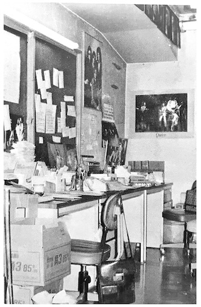

by Makoto Ishi
Vol. 11 contains a lot of content from the English language fan club magazine, including a message from Freddie and some details on the US tour. There are also some impressive but creepy dolls that a fan made and a Q & A with the fan club staff. It's noted that the fan club received an average of 100 phonecalls a day. People are starting to send in letters under pseudonyms like "Little Queeny" and "Brian's Goldfish Droppings".
The entire back cover is an ad for various books of Queen sheet music and scores. It seems these were quite popular in Japan—see Scores for a list of some of these.

Japanese Fan Club headquarters
There is also some info on the new Japanese fan club headquarters, which was basically one tiny office in Tokyo.